00:03现在你已经了解了几种不同的学习算法，线性回归和逻辑回归。
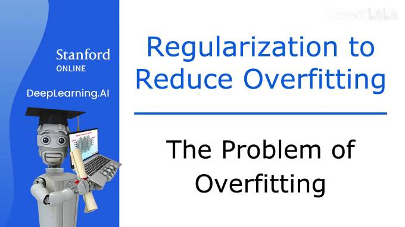
00:09它们在很多任务上都表现良好，但有时在应用中，算法可能会遇到一个叫做过拟合的问题，这会导致它表现不佳。
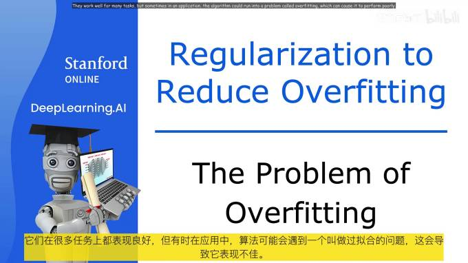
00:20本视频我想向你展示什么是过拟合，以及一个与之密切相关、几乎相反的问题，即欠拟合。
00:30在接下来的几个视频里，我会与你分享一些解决过拟合的技巧。
00:36特别是有一种叫做正则化的方法。
00:40这是个非常有用的技巧。
00:44而正则化将帮助你最小化这个过拟合问题，并让你的学习算法工作得更好。
00:52那么，我们来看看什么是过拟合。
00:56为了帮助我们理解什么是过拟合，我们来看几个例子。
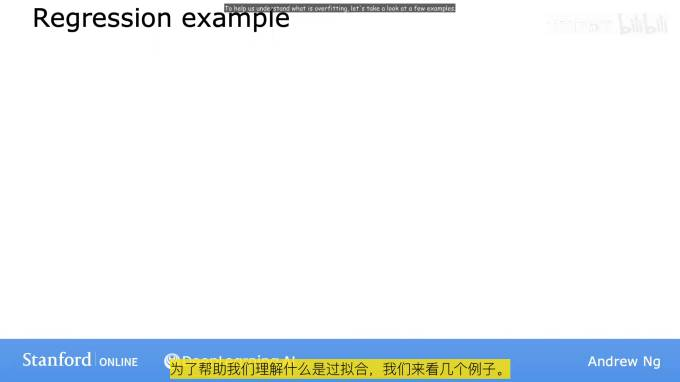
01:03让我们回到用线性回归预测房价的原始例子，你想根据房屋面积来预测价格。
01:15为了帮助我们理解什么是过拟合，我们来看一个线性回归的例子，我将回到我们一直用的那个用线性回归预测房价的示例。
01:29假设你的数据集看起来像这样，输入特征 x 是房屋面积，y 是你试图预测的房屋价格。
01:41你可以做的一件事是用一个线性函数来拟合这些数据。
01:46如果你这样做，你会得到一条拟合数据的直线，也许看起来像这样。
01:53但这并不是一个很好的模型。
01:56观察数据，似乎很明显，随着房屋面积的增加，房价会趋于平缓。
02:05所以这个算法并没有很好地拟合训练数据。
02:10技术术语称为模型正在欠拟合训练数据。
02:17另一个术语是算法有高偏差。
02:22你可能在新闻中读到过，一些学习算法对某些种族或性别表现出了偏差，这非常不幸。
02:32在机器学习中，偏差这个词有多重含义。
02:38检查学习算法是否基于性别或种族等特征存在偏差是绝对关键的。
02:47但偏差这个词还有第二个技术含义，也就是我在这里使用的含义，即如果算法欠拟合了数据，意味着它甚至不能很好地拟合训练集。
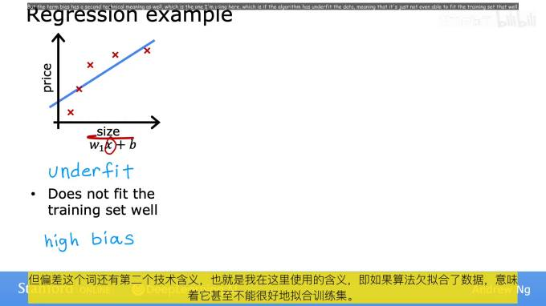
03:01训练数据中存在明显的模式，而算法却无法捕捉到。
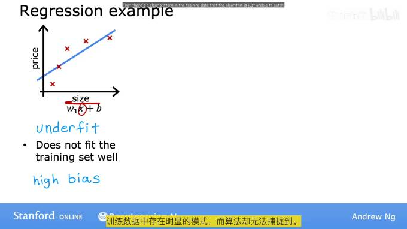
03:07看待这种偏差的另一种方式是，好像学习算法有一个非常强的先入之见，或者我们说它有很强的偏。
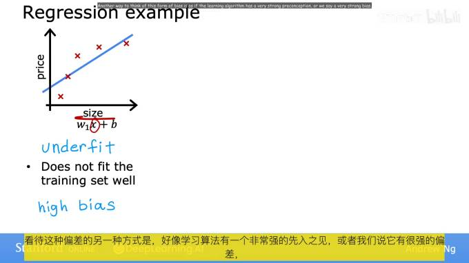
03:17认为房价会是房屋面积的一个完全线性函数，而罔顾与之相反的数据。
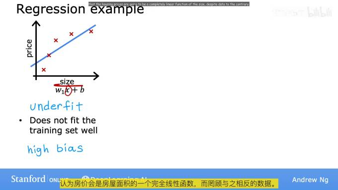
03:26所以，这种数据是线性的先入之见导致它拟合了一条很差的直线，进而导致它欠拟合数据。
03:37现在来看模型的第二种变体，如果你转而用一个有两个特征 x 和 x 平方的二次函数来拟合数据，那么当你拟合参数 W 一和二时，你可以得到一条拟合得稍微好一些的曲线。
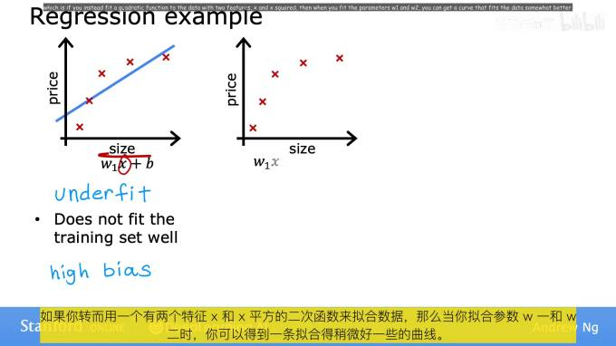
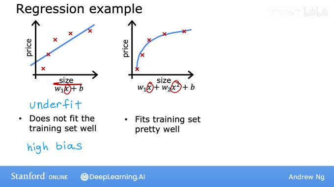
04:01此外，如果你有一栋新房子，不在目前这五个训练样本里，这个模型对这栋新房子的预测大概会相当不错。
04:13所以，如果你是一位房地产经纪人，你希望你的学习算法即使在训练集之外的样本上也能表现良好，这被称为泛化。
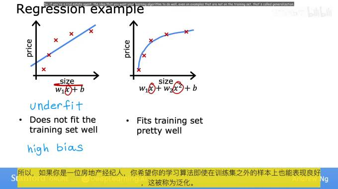
04:24技术上，我们说希望你的学习算法能很好地泛化，这意味着即使在它从未见过的全新样本上也能做出好的预测。
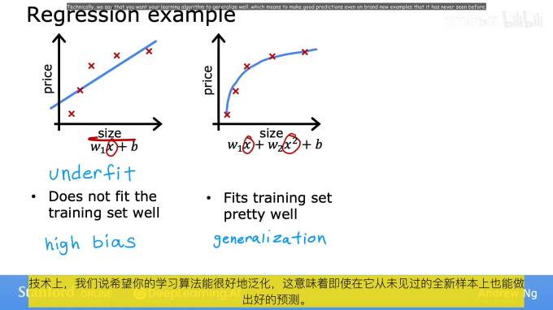
04:35所以，这个二次模型似乎能很好地拟合训练集，虽非完美，但已相当不错。
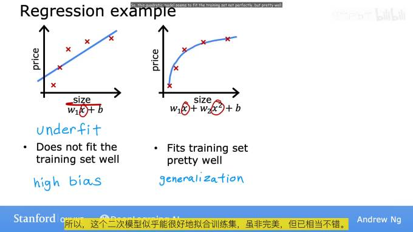
04:41并且我认为它能很好地泛化到新样本上。
04:46现在，我们看看另一个极端。
04:49如果用一个四次多项式来拟合数据会怎样呢？
04:54那么你的特征就有了 x，x 平方，x 立方，以及 x 的四次方。
05:03有了这个四次多项式，你实际上可以拟合出一条精确穿过所有五个训练样本的曲线。
05:11你可能会得到一条看起来像这样的曲线。
05:14一方面，这看起来在拟合训练数据上做得极其出色，因为它完美地穿过了所有训练数据点。
05:24事实上，你将能够选择出导致代价函数精确等于零的参数，因为在这五个训练样本上的误差都是零。
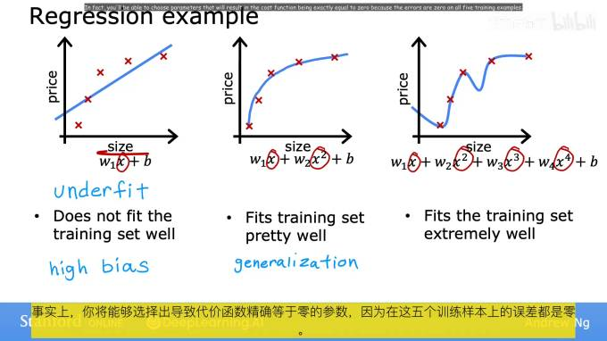
05:36但这是一条非常曲折的曲线。
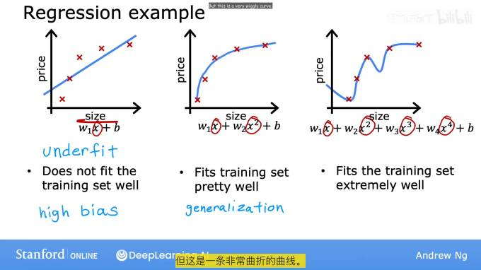
05:42并且，如果这里有这样一个房屋面积，模型会预测这栋房子比那些面积比它小的房子还要便宜。
05:52所以，我们不认为这是一个预测房价的特别好的模型。
05:58技术术语是，我们会说这个模型过拟合了数据，或者说这个模型有过拟合问题。
06:07因为尽管它非常好地拟合了训练集，但它对数据的拟合几乎好过头了，而且看起来这个模型无法泛化到它从未见过的新样本上。
06:17而且看起来这个模型无法泛化到它从未见过的新样本上。
06:23对此的另一个说法是，这个算法有高方差。
06:29在机器学习中，很多人会将过拟合和高方差几乎互换使用，也会将欠拟合和高偏差几乎互换使用。
06:41过拟合或高方差背后的直觉是，算法非常非常努力地去拟合每一个训练样本。
06:49而事实证明，如果你的训练集哪怕只有一点点不同，比如某栋房子的定价只是稍微高一点或低一点，那么算法所拟合的函数最终可能会完全不同。
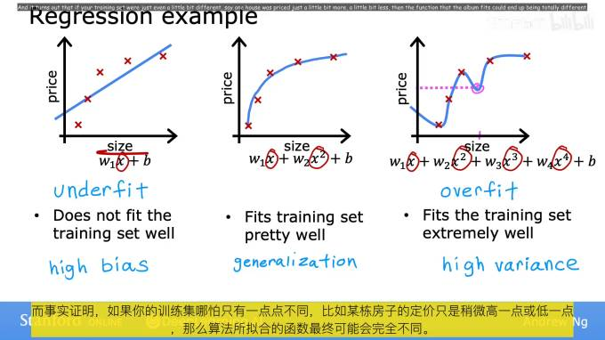
07:04所以，如果两个不同的机器学习工程师，用只是略有不同的数据集去拟合这个四次多项式模型，他们最终可能得到完全不同的预测，或者说变化很大的预测。
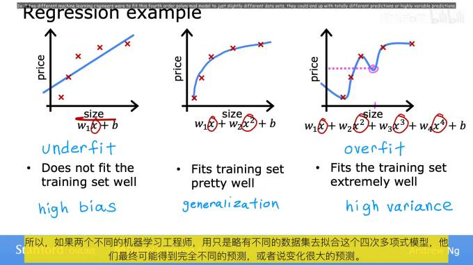
07:18这就是为什么我们说这个算法具有高方差。
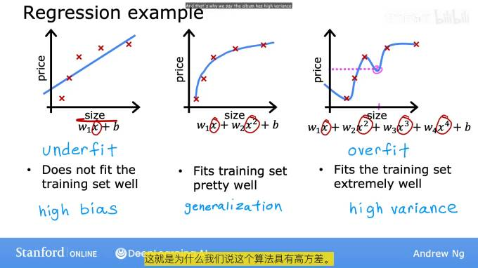
07:23对比这个最右边的模型和中间的模型，对于同一栋房子，似乎中间的模型给出了更合理的价格预测。
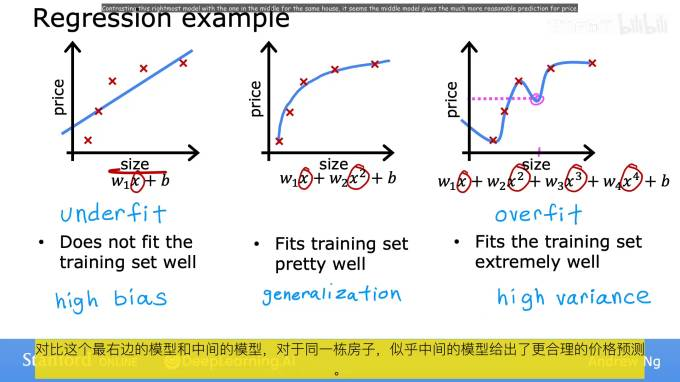
07:34中间这种情况并没有一个正式的名字，但我将称它为恰到好处，因为它既不是欠拟合也不是过拟合。
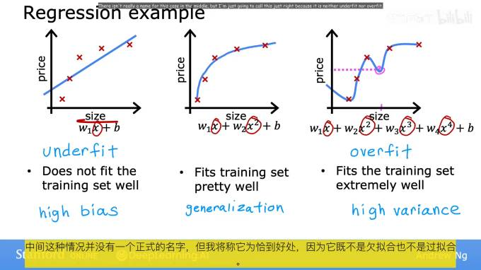
07:44所以我们可以说，机器学习的目标是找到一个希望既不欠拟合也不过拟合的模型。
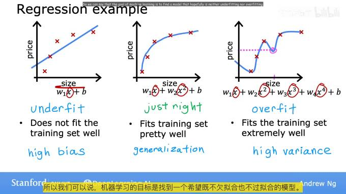
07:52换句话说，希望找到一个既没有高偏差也没有高方差的模型。
07:59当我想起欠拟合和过拟合、高偏差和高方差时，我有时会想起金发姑娘和三只熊的儿童故事。
08:11在这个儿童故事里，一个叫金发姑娘的女孩拜访了熊一家的家。
08:17有一碗粥尝起来太凉了，所以那不行。
08:23还有一碗粥太烫了，没法吃。
08:28但有一碗粥既不太凉也不太烫。
08:37总结一下，如果你的特征太多，像右边那个四次多项式一样，那么模型可能会很好地拟合训练集，但几乎是好过头了，即过拟合，并具有高方差。
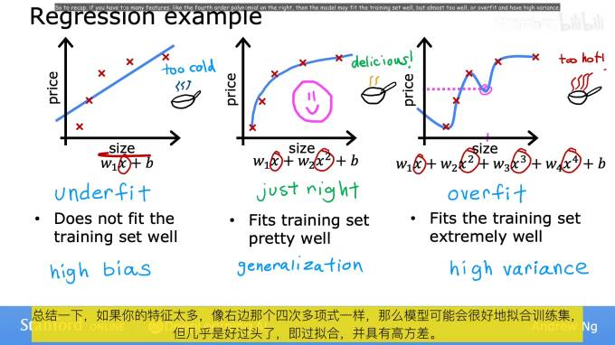
08:51另一方面，如果你的特征太少，在这个例子中，就像左边那个模型一样，它会欠拟合并且具有高偏差。
09:01而在这个例子中，使用二次特征 x 和 x 平方，似乎就恰到好处。
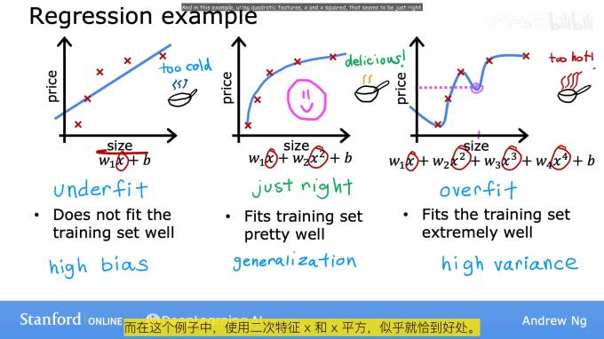
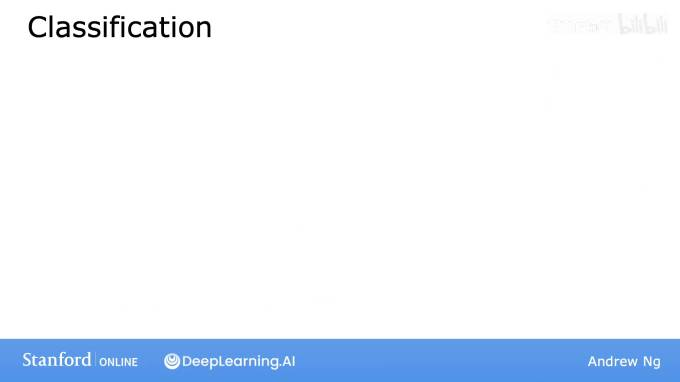
09:08到目前为止，我们只看了线性回归模型的欠拟合和过拟合。
09:14类似地，过拟合也同样适用于分类问题。
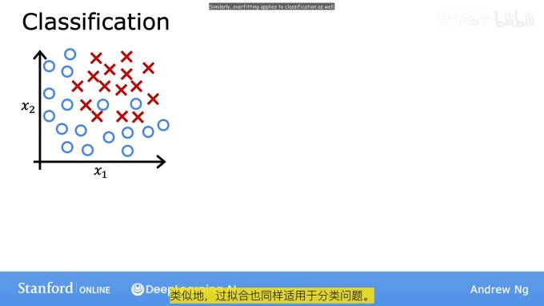
09:18这是一个有两个特征 x 一和 x 二的分类示例。
09:24其中 x 一可能是肿瘤大小，x 二是患者的年龄。
09:29我们试图对肿瘤是恶性还是良性进行分类，如这些叉号和圆圈所示。
09:37你可以做的一件事是拟合一个逻辑回归模型，像这样一个简单模型，照常，g 是 sigmoid 函数，里面这项是 z。
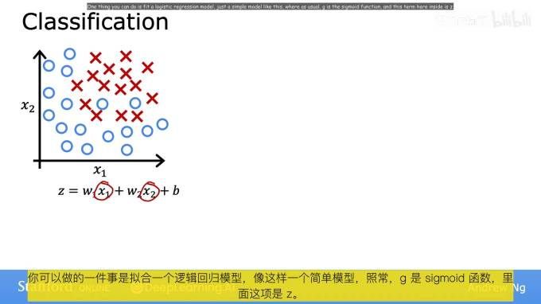
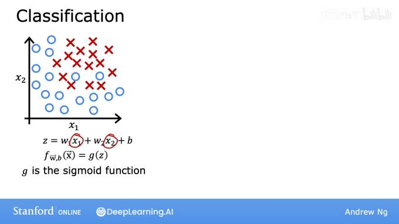
09:53如果你这样做，最终会得到一条直线作为决策边界。
10:00这条线就是 z 等于零的位置，它将正负样本分开。
10:11它看起来还可以，但似乎也不是一个非常好的拟合。
10:16所以这是一个欠拟合或说高偏差的例子。
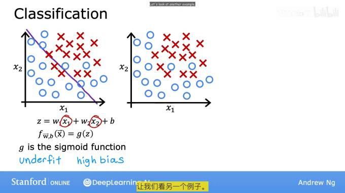
10:24如果你在特征中加入这些二次项，那么 z 就变成了中间这个新项，而决策边界，也就是 z 等于零的位置，可以看起来更像这样，更像一个椭圆或椭圆的一部分。
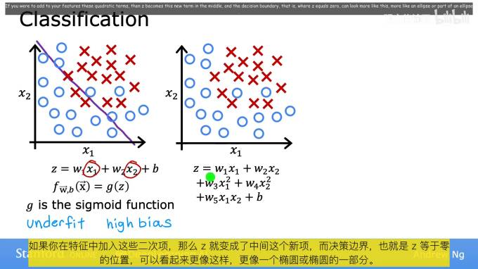
10:40这是一个相当好的数据拟合，尽管它并未完美分类训练集中的每一个训练样本。
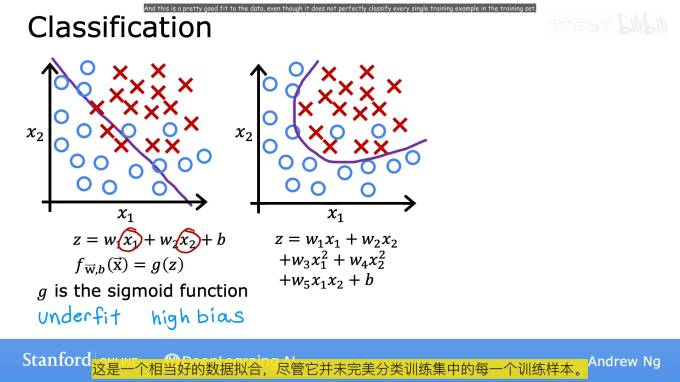
10:48注意这些叉号中的一些是如何被分到圆圈中的。
10:56我将称之为恰到好处，看起来它能很好地泛化到新病患。
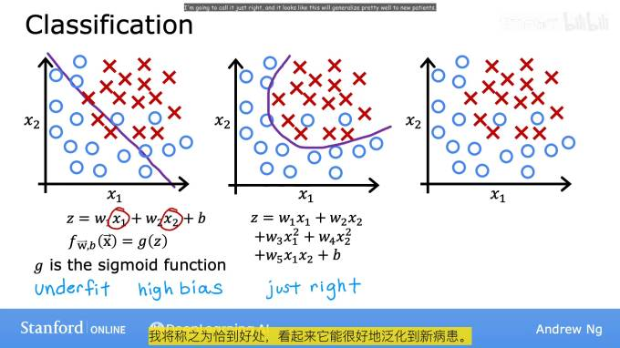
11:03最后，在另一个极端，如果你用一个非常高的多项式去拟合，像这样有很多很多特征，那么模型可能会非常努力，扭曲或弯折自身，来找到一个能完美拟合你训练数据的决策边界。
11:23拥有所有这些高阶多项式特征会让算法选择这个确实过于复杂的决策边界。
11:33如果特征是肿瘤大小和年龄，而你试图将肿瘤分类为恶性或良性，那么这个模型看起来并不像是一个用来做预测的好模型。Andrew。
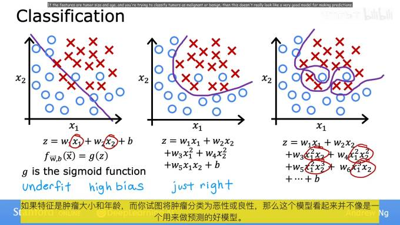
11:45再一次，这是一个过拟合和高方差的例子，因为这个模型，尽管在训练集上表现非常好，但看起来无法很好地泛化到新样本上。
11:58现在你已经看到了一个算法如何欠拟合或具有高偏差，或者过拟合并具有高方差。
12:06你可能想知道如何才能得到一个刚刚好的模型。
12:11在下个视频中，我们将探讨一些解决过拟合问题的方法。
12:17我们也会触及一些与解决欠拟合相关的思路。